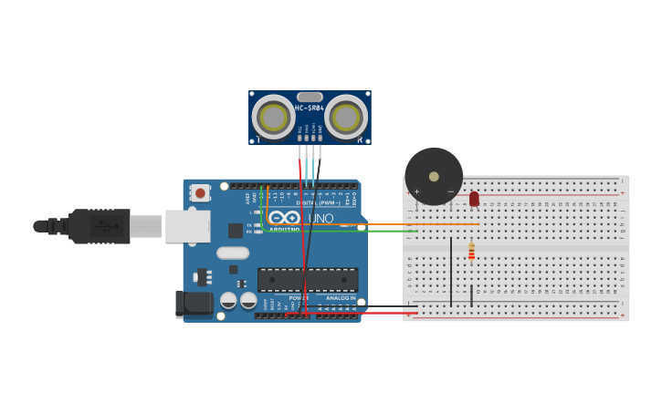

PROJECT 13: SMART PARKING SENSOR
Audio-Visual Proximity Alarm
Mission Brief
Modern cars use complex systems to prevent accidents while parking. In this project, you will build your own version. By combining the "eyes" of an Ultrasonic Sensor with a "voice" (Buzzer) and a "signal" (LED), you create a complete safety system.
Key Components
- Arduino Uno R3
- HC-SR04 Ultrasonic Sensor
- Piezo Buzzer
- LED
- Resistor
- Jumper Wires
Circuit Diagram

Pin Connections
| Component Pin | Arduino Connection |
|---|---|
| Sensor VCC | 5V |
| Sensor GND | GND |
| Sensor Trig | Pin 12 |
| Sensor Echo | Pin 11 |
| Buzzer (+) | Pin 8 |
| LED Anode (+) | Pin 13 |
Step-by-Step Instructions
- Place the HC-SR04 sensor on the breadboard. Connect VCC to 5V and GND to GND.
- Connect the Trig pin to Pin 12 and the Echo pin to Pin 11.
- Insert the Buzzer. Connect the Positive leg to Pin 8 and Negative to GND.
- Insert the LED. Connect the Anode (Long leg) to Pin 13.
- Connect the LED Cathode (Short leg) to GND via a resistor.
- Upload the code below.
Arduino Code
/* Project 13 - Smart Parking Sensor
* If object is closer than 15cm:
* - Turn ON LED (Visual Warning)
* - Turn ON Buzzer (Audio Warning)
*/
const int trigPin = 12;
const int echoPin = 11;
const int buzzerPin = 8;
const int ledPin = 13;
long duration;
int distance;
void setup() {
pinMode(trigPin, OUTPUT);
pinMode(echoPin, INPUT);
pinMode(buzzerPin, OUTPUT);
pinMode(ledPin, OUTPUT);
Serial.begin(9600);
}
void loop() {
// 1. Trigger Pulse
digitalWrite(trigPin, LOW);
delayMicroseconds(2);
digitalWrite(trigPin, HIGH);
delayMicroseconds(10);
digitalWrite(trigPin, LOW);
// 2. Measure Echo
duration = pulseIn(echoPin, HIGH);
// 3. Calculate Distance
distance = duration * 0.034 / 2;
Serial.print("Distance: ");
Serial.println(distance);
// 4. Safety Logic
if (distance < 15) {
// DANGER: Object is close!
digitalWrite(ledPin, HIGH);
tone(buzzerPin, 1000); // Constant beep
} else {
// SAFE
digitalWrite(ledPin, LOW);
noTone(buzzerPin);
}
delay(100);
}
How It Works
- Integration:
-
Multiple Outputs:
This project demonstrates how a single sensor input (distance) can trigger multiple different actions simultaneously (Light + Sound). -
Feedback Loop:
The system creates a loop: Sensor Measure -> Decision (If close) -> Action (Alert). This is the basis of robotics.
Expected Output
Far Away (>15cm): Everything is quiet and dark.
Too Close (<15cm): The LED lights up and the Buzzer sounds a continuous tone to warn you.
What You Learned
- Combining inputs and outputs for a cohesive system.
- Simulating real-world automotive safety features.
- Using logic to control multiple pins at once.
Next Steps / Extension Ideas
Modify the code to make the beeping speed increase as you get closer, just like a real car's reverse sensor! (Hint: Use `delay(distance * 10)` inside the loop).